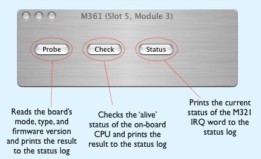

Double-clicking the icon will bring up the M321 Dialog.
Double-clicking the icon will bring up the M321 Dialog.The M321 module is an intelligent stepper motor controller M-module, based on an MC68332 micro controller. The M321 has four on-board power amplifiers which can drive four phases. The modle can drive two 2-phase motors independently or one 4-phase motor. Each controller channel has an associated homesensor input up front and a trigger line on the M-module connector.
The MC68322 executes local firmware booted from ROM. The option of downloading firmware into the CPU from ORCA is not currently supported.
The M321 is installed into ORCA by dropping it's icon onto a M-Carrier board and connecting the resulting connection point(s) to stepper motors on the configuration page. The M321 icon looks like this:
Double-clicking the icon will bring up the M321 Dialog.
The M321 dialog is simple and only exposes three functions to the user.

All actual motor functions are accessed via the motor dialog.